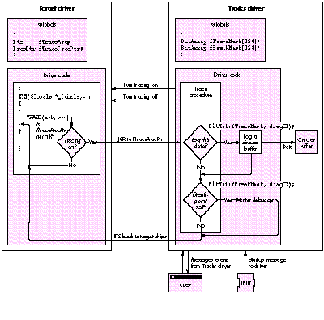
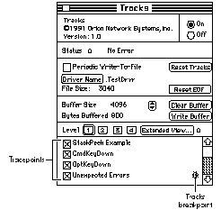
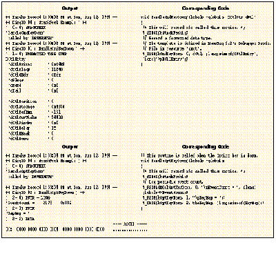

Here's a tool that gives you access to what you really need to know while debugging a
driver. With Tracks, you decide what kind of information you want to track-- variable
contents, who called the current function, timing information, and more--all while
your driver's running. When a problem arises, you can easily tell where your
driver's been and what it's been doing, so you can find out just what went wrong.
If you've ever written a device driver, you know how hard it is to keep track of what's
going on. Learning the value of variables and other data as the driver runs usually
requires a lot of time in a debugger.
When a driver crashes, trashing the stack in the process, it's often impossible to
determine the last routine that was executed. Finding the bug can take many hours,
especially if the crash appears only periodically. Even after you've found the bug, each
crash requires recompiling, building, restarting, and retesting. Anything to help
locate bugs more quickly and accurately could save a lot of time and frustration.
That's why Tracks was written. Whether you're writing your first or your fiftieth
driver, it can help you track down those nasty bugs that always show up. The simple
macros in Tracks make it easy to log all kinds of information from a driver written in
C or C++. You can record strings, data blocks, longs, and even formatted data types.
Tracks can write debugging information directly to disk as it comes in, or it can keep
the information in a circular buffer and dump it to disk on command--a MacsBug dcmd
(debugger command) lets you do this even after a crash.
You can completely control what information is logged, and your driver won't even
know it. If you know a routine works, you can turn off calls from it at any time--
including while your driver's running.
On theDeveloper CD Series disc, you'll find TestDrvr, a sample driver that
demonstrates how to implement Tracks functionality in a simple (and useless) driver.
Also enclosed is the complete source for the Tracks utilities, as well as all the
necessary support tools. In the following sections, you'll find out about how Tracks
works, what kind of information the Tracks macros log, and what the code does. You'll
also get some pointers on installing and using Tracks. If you're eager to start using
Tracks, take a look at "Tracks in Action."
Tracks works somewhat like a message service that can accept telephone calls on 128
different lines from the target driver. You decide where to install the lines and what
kinds of messages each line will deliver. You can control which lines to listen to (or
not) and where to save incoming messages.
The invocations of macros--or calls--that send information to Tracks are
calledtracepoints. You assign each tracepoint a number between 0 and 127, called
adiagnostic ID (diagID), and a name. The diagID represents one bit in a 128-bit flag
that can be set or cleared from the Tracks control panel device (cdev). When a
tracepoint is encountered, data is logged only if the corresponding bit has been set.
Being able to set or clear tracepoints on the fly allows you to tailor the type of
information being traced. By assigning a meaningful name to each tracepoint, you'll
know which ones to set or clear, and the name of the tracepoint will be recorded with
any Tracks output. Tracksbreakpoints are tracepoints that will drop you into your
debugger.
GROUPING INFORMATION
Because the diagID doesn't have to be unique, a tracepoint can represent a single Tracks
call, a type of Tracks call, or a grouping of Tracks calls. A type of Tracks call, for
instance, might be all error- reporting calls. A grouping might be all tracepoints in a
particular routine.
This kind of flexibility allows you to group your information into logical and
functional units. It's up to you to create as many or as few tracepoints as you need. For
instance, if you're working on a new routine, you may set a whole bunch of Tracks
calls all to the same diagID. When you test the routine, you can set some or all of the
other switches to off and focus on the messages from that routine. Later, when you
know the function works, you can keep that switch off.
Numbering for ease of use. There aren't any limits on how you group your
diagIDs. You might assign all messages to one tracepoint or simply start at 0 and
increment by 1 from there. The key is that once you know something works, you want
to be able to turn off tracing in that area. By assigning unique diagIDs to groups of
Tracks calls, you can quickly tailor your tracing.
For convenience, there are four groups of 32 tracepoints each (0-31, 32-63,
64-95, and 96-127) that you can turn on or off with a click. (The Tracks cdev
contains buttons for levels 1 through 4, which correspond to these four groups.) Most
new users start out tracing all information. But as more and more Tracks output is
added, information overload can be a problem, and it's great to be able to limit Tracks
information easily.
PartCodes are used to identify consecutive Tracks calls that have the same diagID.
PartCodes should start at 0 and increment by 1 for each additional Tracks call with the
same diagID. For example, say you wanted to dump the contents of all three parameters
you receive on entry to a function. You'd probably want all these to have the same
diagID. The first Tracks call should have a partCode of 0, the next call a partCode of 1,
and so on. The partCode makes it more evident if some Tracks information is lost. Data
can be lost if the circular buffer fills before writing to a file, and data can be locked
out if Tracks is already in use.
To log data from your driver, you call one of five simple macros from your driver
code. Each macro logs a different kind of information. All the calls must have access to
your driver's global storage and follow the numbering conventions just described for
the diagID and partCode.
T_STACK(diagID);
T_STACK, one of the most useful calls, records the current function and who called it.
If the driver is written in C++, a special unmangler automatically prints out the
arguments that were passed to the function. If called from every major routine,
T_STACK will leave the proverbial trail of bread crumbs. T_STACK's partCode is
always 0.
T_DATA(diagID, partCode, &dataBlock, sizeof(dataBlock));
T_DATA is used to dump a block of memory, formatted in hexadecimal and ASCII.
T_TYPE(diagID, partCode, recordPtr, sizeof(Record), "\pRecord");
T_TYPE records a data structure. The address, size, and a Pascal string with the name
of the structure must be passed to the macro. The format of the data structure must be
defined in an 'mxwt' resource, stored in your driver or in your MacsBug Debugger
Prefs file. If the resource to define the structure isn't found, the data will be treated as
a T_DATA call. Since the templates are used only to format data, you don't need to use
MacsBug.
T_PSTR(diagID, partCode, "\pA string you'd like to see");
T_PSTR simply records a Pascal string.
T_PSTRLONG(diagID, partCode, "\ptheLong = ", theLong);
T_PSTRLONG records a Pascal string and a long. Usually the string is used to tell you
what follows. Feel free to cast whatever you can get away with to the long.
TestDrvr is a simple driver skeleton that checks the status of the keyboard. If the
Option key is down, it logs one type of data, and if the Command key is down, it logs
another type of data.
To see Tracks in action, follow these condensed instructions:
Look over the TestDrvr source code if you haven't already done so. Don't forget to
remove TestDrvr when you're done. For information about the output from the
example, see the section "Examining Tracks Output" under "Using Tracks."
This section is for folks who are really wide awake and ready for the gritty details. (If
you're not one of those folks, you may want to jump ahead to the "Installing Tracks"
section.) The Tracks file contains a cdev, an INIT, and the Tracks driver. The Tracks
driver has three key responsibilities: maintaining the cdev, sending messages to the
target driver, and accepting data from the target driver via the trace procedure
(TraceProc). Figure 1 shows the flow of data between Tracks and the target driver.
MAINTAINING THE CDEV
The Tracks driver's first responsibility includes sending status information to the
cdev and responding to cdev commands like "clear buffer" and "write file." Because the
cdev displays the status of fields that can change at any time, the cdev monitors the
driver and updates fields as they change.
The Tracks driver doesn't always need periodic (accRun) messages. When the driver
gets a message to turn its periodic write-to-file flag on or off, the driver sets or
clears its dNeedTime bit in the dCtlFlags. (Recall that BitClr, BitSet, and BitTst test
bits starting at the high-order bit.)
BitClr(&dCtl->dCtlFlags, 2L);/* Clear bit 5 = dNeedTime bit. */ BitSet(&dCtl->dCtlFlags, 2L);/* Set bit 5 = dNeedTime bit. */
SENDING MESSAGES TO THE TARGET DRIVER
The Tracks driver can send one of two messages to the target driver: "enable tracing"
or "disable tracing." The enable message passes the target driver a function pointer
that points to an address within the Tracks driver code as well as a pointer that points
to the Tracks driver's own globals. The target driver needs to save both of these
because they're needed by the Tracks macros. The macros use the function pointer to
call the Tracks driver directly, passing it the globals pointer along with tracing data.
When the target driver gets the disable message, the saved function pointer is set to
nil. (For the code to handle enable and disable messages, see the "Installing Tracks"
section.) The Tracks macros in the target driver check to see if the function pointer is
nil, and if it isn't, the target driver calls the function pointer within Tracks with
arguments that correspond to the particular Tracks function. The macro that checks
and invokes a non-nil function pointer is defined in the following code. The macros
used in the target driver's code reference this macro. Notice that for a Tracks call to
compile, it needs to access your globals by the same name, in this case by the name
globals. Macros are used so that they can easily be compiled out of the final product.
Figure 1How Tracks Interacts With the Target Driver

#define TRACE(diagID, partCode, formatID, data1, data2, data3) \
{ register ProcPtr func; \
func = globals->fTraceProcPtr; \
if ( func != nil ) \
(*((pascal void (*)(long, unsigned char, unsigned char, \
unsigned char, long, long, long))func)) \
(globals->fTraceArg, diagID, partCode, formatID, \
data1, data2, data3); }
ACCEPTING DATA FROM THE TARGET DRIVER
The actual routine the macro executes, located in the Tracks driver, is shown below.
The address of this routine was passed to the target driver in the enable message, and
the first argument (long refcon) is actually the pointer to the Tracks driver's globals,
which the Tracks driver expects the target driver to pass back to it each time. The
macro calls right into the Tracks driver code.
pascal void TraceProc(long refcon, unsigned char diagID,
unsigned char partCode, unsigned char formatID, long data1,
long data2, long data3)
{
register TraceGlobals *globals;
register Boolean okLocked;
register Boolean breakOnExit = false;
globals = (TraceGlobals *)refcon; // Set up driver globals.
if (diagID < 128) // Valid diagIDs range from 0 to 127.
{
// Check the need for a break on exit (breakpoint was set).
breakOnExit = BitTst((Ptr)globals->fBreakMask, (long)diagID);
// Check to see if the information passed should be logged.
if (BitTst((Ptr)globals->fTraceMask, (long)diagID))
{
// The tracepoint was set--check that the buffer is ready.
if (globals->fBufferEnabled) // Is the buffer ready?
{
// Test and set "locked-out" flag.
okLocked = UTLock(&globals->fTraceLock);
// If trace request was locked out, set locked-out
// flag.
if (okLocked)
// Log incoming data to circular buffer.
HandleTraceData(globals, diagID, partCode,
formatID, data1, data2, data3);
else
globals->fLockedOutFlag = true; // Locked out!
}
}
}
// Handle a breakpoint, if any.
if (breakOnExit)
{
// We can assume there's a debugger installed.
if (globals->fBreakOnceThenClear)
{
BitClr((Ptr)globals->fBreakMask,(long)diagID);
// Signal cdev that debug mark was turned off.
globals->fDebugMarkUnset = true;
DebugStr("\pTrace User Breakpoint (Once)");
}
else
DebugStr("\pTrace User Breakpoint");
}
return;
}
The above routine checks to see if the diagID specified is enabled (checked in the cdev).
If it is, HandleTraceData handles the data passed in the way indicated by the formatID.
The formatID specifies what type of data is being passed--a Pascal string, a Pascal
string and a long, a data block, a stack peek request, or a formatted type dump.
Adventurous programmerscould add their own formats (for instance, to record
floating-point numbers) by modifying the HandleTraceData routine and DumpTracks
and then creating a new macro. Adding a new format isn't trivial, though. Usually, it's
easier to make an existing format do the job. Since this routine can be called at
interrupt time, it needs to test and set a "locked-out" flag, which it does with an
assembly language routine called UTLock that uses the 68000's BSET instruction.
BSET helps ensure that the routine won't get into trouble by executing more than one
instance of itself. If the routine gets locked out, DumpTracks will notify you that some
data was lost.
The routine also checks to see if a breakpoint has been set for that diagID. If it has,
just before the routine exits, it invokes the debugger. Two kinds of breakpoints are
supported--"once-only" and "immortal." The once-only kind of breakpoint flag is
cleared after being tripped. Tracks breakpoints can be cleared or set only through the
Tracks cdev--not from your debugger.
An interesting routine in drvr.c is StackPeek, which is called by T_STACK macros.
StackPeek examines the stack frame to find what the current procedure is and who
called it. StackPeek searches backward until it finds the return address of the function
that called T_STACK. From there, it searches the actual code, looking for the last
instruction (an RTS, a JMP(A0), or an RTD), which is followed by the name of the
function. It then finds the length of the function name and repeats the process for the
caller, which is just one stack frame deeper.
The following are instructions for adding Tracks capabilities to a driver written in C
or C++. Currently the only way to view Tracks output is through the DumpTracks
MPW tool.
typedef struct
{
your stuff
ProcPtr fTraceProcPtr; Ptr fTraceArg; } Globals, *GlobalsPtr;
globals->fTraceProcPtr = nil;
Tracks calls attempted before this is done will result in fireworks. If your
driver's global storage isn't referenced by a parameter calledglobals, you can
change the word "globals" in the file TracksInfo.h to whatever the global
storage is referenced by. The Tracks macros require you to be consistent in
your global storage references.
case kInstallTrace: globals->fTraceProcPtr = ((TraceDataPtr)paramPtr)->TraceProc; globals->fTraceArg = ((TraceDataPtr)paramPtr)->TraceGlobals; break; case kRemoveTrace: globals->fTraceProcPtr = nil; globals->fTraceArg = nil; break;
Resource 'DrvN' ID 128 contains a Pascal string with the name of your driver
(which starts with a period). The 'DrvN' resource lets the cdev know which
driver to send the "turn on" and "turn off" messages to.
Resource 'STR#' ID 777 is a string list that should contain the names of
tracepoints you create. It's for the tracepoint names in the cdev and for
DumpTracks output--not for use by your driver. The 'STR#' resource can be
partially filled, blank, or even missing.
When you add a Tracks call with a new diagID, you'll want to give it a name
and add it to the string list. Changes show up the next time the cdev is opened
or DumpTracks is used. If the 'STR#' resource is missing, the tracepoint name
will show up in the cdev as a number--the diagID. DumpTracks will warn you
when there's no name associated with the diagID.
Warning: The diagIDs range from 0 to 127, and in ResEdit the string list is
set up to start at 1. This means that if you add a Tracks call with a new diagID
of 5, you need to change entry number 6 in the string list.
Add a few Tracks macros to your code, rebuild your driver, and you're set to start
using Tracks. When you're ready to ship your driver, simply #define GOLD in
TracksInfo.h and remove the two Tracks resources and any 'mxwt' resources from
your driver.
Tracks can be controlled via dcmd or cdev. The dcmd lets you turn tracing on and off
and write the circular buffer to disk. The Tracks cdev, shown in Figure 2, lets you
control all the Tracks functions.

Figure 2 A Look at the Tracks cdev
TRACING AND SETTING TRACEPOINTS
To begin tracing data, open the cdev, click the Driver Name button, and select a driver
that has Tracks code installed at the Standard File prompt. If the target driver is set up
properly, you'll see the name of the driver next to the button. To turn on tracing, click
the On button and check the tracepoints you want traced. Tracepoints are represented
by the list of 128 checkboxes. As soon as information is retrieved, the number in the
Bytes Buffered field will change. To stop sending data to Tracks, click the Off button.
SETTING BREAKPOINTS
To set breakpoints from Tracks, either click in the Tracks cdev just to the left of the
scroll bar, opposite the desired tracepoint, or Option-click a checkbox. A tiny bug will
appear, indicating a breakpoint. When a breakpoint is hit, you'll need to step a few
times to return from the Tracks code to your driver. Since the default type of
breakpoint is once-only, a breakpoint must be reset each time after it's encountered.
SETTING THE BUFFER
Like all good circular buffers, the Tracks buffer will hold the most current data. The
default (and minimum) setting is 4K. If you want to change this size, you need to turn
off Tracks and clear the contents of the buffer before clicking the arrows button.
Generally, it's better to have a large buffer if you can afford it. But if you aren't
logging a lot of data, and periodic write-to-file is turned on, you can have a small
buffer and not lose any information.
An excellent use of the circular buffer is to catch sporadic bugs that might not occur
for hours (or days). For example, set up a test to run continuously until the problem
is detected. Plan to let the test run over the weekend with write-to-file turned off.
When you come in on Monday, the circular buffer will have the last 4K of data--or
whatever size buffer you used--leading up to and including the occurrence of the
problem.
WRITING THE BUFFER
Before you can examine any Tracks data, you need to send it to a file by clicking the
Write Buffer button. To clear the file, click the Reset EOF button. The data is always
written to the Tracks Prefs file, which hangs out in your System Folder or, in System
7, in your Preferences folder. Use the Reset EOF button instead of throwing the Tracks
Prefs file away, since settings information is also stored there.
If you check the Periodic Write-To-File box, data will be written to the disk
approximately every second (60 ticks), assuming there's data to send. Be forewarned
that data can come out at an alarming clip--in minutes you can create a multimegabyte
file. The periodic writes-to-file occur even when the cdev is closed, until you turn it
off or your hard drive becomes full.
If your driver crashes, you can write the circular buffer to disk via the Tracks dcmd.
Just type "Tracks write" from your dcmd-supporting debugger.
EXAMINING TRACKS OUTPUT
Once data has been written to your Tracks Prefs file, you can examine it using
DumpTracks. Figure 3 shows a sample (from the TestDrvr example) of a couple of
simple Tracks calls and the type of output you'll get. Notice that each routine that
wants to use a Tracks macro needs to have a pointer to the globals passed as an
argument with the same name--in this case,globals.
The first line of a record holds a time stamp. Because other calls with the same diagID
will follow immediately, it's shown only when the partCode is 0.
The second line shows the diagID and the name of the corresponding tracepoint, shown
in parentheses.
The "(diagID - partCode) TYPE_OF_TRACE" line (the third line) is followed by the
data for that Tracks call. Figure 3Comparing Tracks Output With the Calls

Notice that the T_TYPE call formats the contents of the driver's DCtlEntry. To be able
to display formatted types, DumpTracks needs to read the 'mxwt' format from
Debugger Prefs. Also notice that the DCtlEntry has a QHdr structure inside it, which
was also displayed.
Debugging a device driver can be time consuming and difficult. Tracks provides you
with a tool to help keep your drivers under control. How you set up tracing really
depends on what kinds of things you'd like to monitor--error conditions, your own
driver statistics, or whatever. If you suspect bugs will be, or are, a major source of
headaches, you'll save time by adding lots of Tracks calls.
Take a look at the TestDrvr sample source code. Once you get Tracks going in your own
code, you should find that you're debugging your drivers in a fraction of the time it
used to take.
breakpoint A tracepoint that enters your debugger.
diagnostic ID (diagID) A number between 0 and 127 that represents one bit in a
128-bit flag. In Tracks, a diagID is assigned to a tracepoint. The flag determines
whether trace data will be logged or not. A diagID can represent a single Tracks call or
a grouping of calls.
DumpTracks An MPW tool that lets you see Tracks output.
partCode A number used to identify consecutive Tracks calls that have the same
diagID.
tracepoint An invocation of a macro in your driver code that sends out information
to the Tracks driver.
Tracks A programming utility--containing the Tracks cdev, INIT, and driver--used
to debug drivers in development.
BRAD LOWE attends Chico State, where he claims to be majoring in fashion
merchandising, although informed sources say he's been sighted frequently in
computer science classes. An Eagle Scout, he enjoys hiking, skiing, mountain biking,
and scuba diving. His newest toy is a paraglider, which he flies--on his free
weekends--over obscure regions of Northern California. *
Tracks was written by Jim Flood and Brad Lowe for Orion Network Systems, Inc.,
a subsidiary of Apple Computer, to help develop and debug Orion's SNA*ps Access
driver, part of the SNA*ps product family. SNA*ps allows you to connect your
Macintosh to an IBM SNA (System Network Architecture) network and communicate
with SNA-based hosts, midrange systems (such as AS/400), and even personal
computers. *
For more information on the 'mxwt' templates, see the MacsBug documentation. *
THANKS TO OUR TECHNICAL REVIEWERS Neil Day, Jim Flood, Craig Hotchkiss,
Gordon Sheridan*